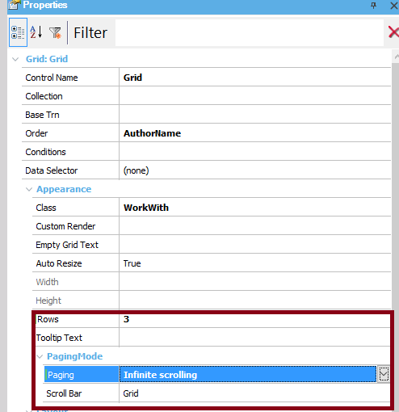

In order to have Infinite scrolling for grids in web applications, consider the following. First, the Rows property has to be set to a value different than 0. The reason is that here, the Rows property indicates the number or rows that have to be brought from the server in each request. When the Rows property is set to a value different than zero, the Paging Property for grids becomes available.  The Paging property has to be set to Infinite Scrolling value to have infinite scrolling behavior. If it's set to "One Page at a Time" it will do a traditional paging. Then, the Scroll bar property becomes available. The scroll can be on the grid itself (Scroll bar= Grid), or in the form (Scroll Bar = Form).
Notes about the implementation
|
| Backlinks | ||
| Infinite scrolling | Paging Property for grids | Rows property |
| Scroll bar property |